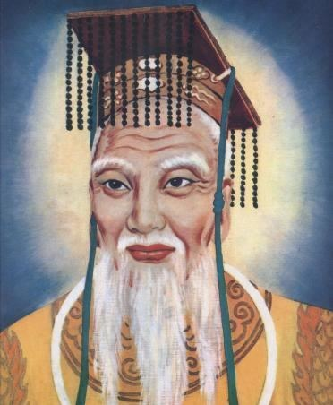
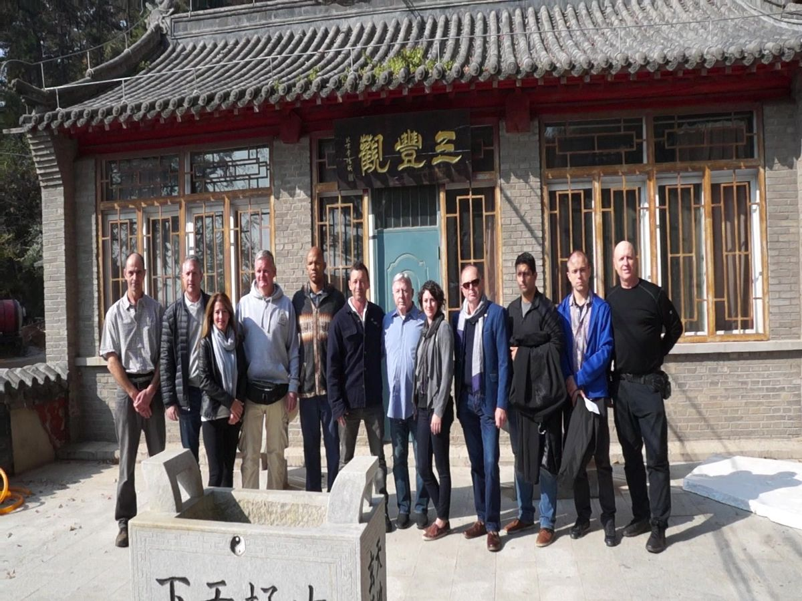
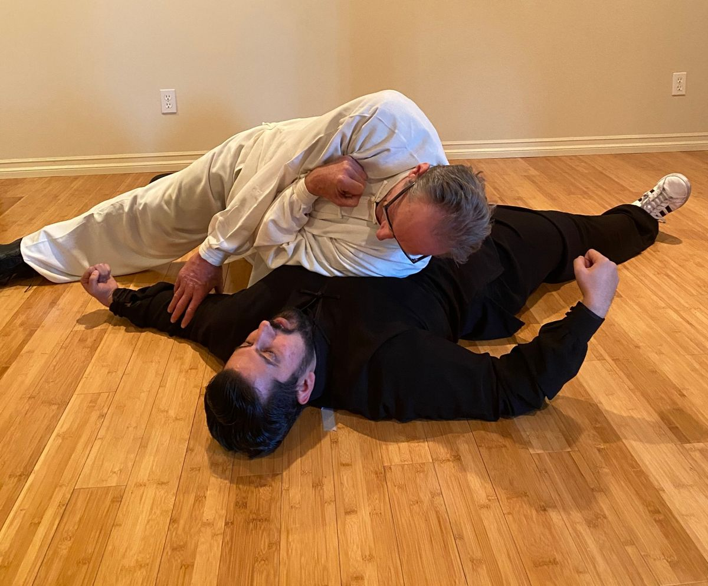

武術体系 · 道家
Hsiao Chiu Tien Wu Tao · 道家の武術体系
写真
武術体系 · 道家
小九天は、今日知られている中で最も古く、途切れることなく伝承されてきた道家武術の体系で、伝承では黄帝と九室の経典にその起源をたどります。当サイトのほかの武術は、小九天とは別の独立した完全な体系で、それに加えて指導しています。
その歴史の大半において、この体系は公に教えられることがまったくありませんでした。一代ごとに一人の道士から一人の後継者へと、書き記されることなく口伝で受け継がれてきたのです。第三十二代の継承者である喬長虹宗師が、初めてその一部を外の世界に開きました —— それでも、自ら選んだ数人に対してだけでした。
この体系は三本の柱の上に成り立っており、三つすべてを備えていなければ、この体系を受け継いだとはみなされません：

Little Nine Heavenは入門用のカリキュラムではなく、当校でもそのようには扱っていません。門人はたいてい、形意拳、八卦掌、陳式太極拳で基礎を築いた後にこの体系へ進みます —— それらが劣った武術だからではなく、それらが培う身体の仕組みと忍耐こそが、この教えを理解可能なものにするからです。
特にこの体系に惹かれているのであれば、お問い合わせの際にそうお書きください。多くの方への正直な答えは、そこへ至る道はまず数年の別の稽古を経るということです。それは後になって知るよりも、最初に知っておく方がよいでしょう。

小九天功夫とは？
小九天は、伝承では黄帝にまでさかのぼる道家の武術体系です。九室拳、剣術、洗髄功の三つの技を柱としています。形意拳、八卦掌、陳式太極拳など当サイトのほかの武術は別の体系で、小九天に加えて教えています。
初心者が小九天から始められますか？
通常はできません。多くの門人は、まず形意拳、八卦掌、陳式太極拳で基礎を築いてから小九天に進みます。これらの武術が、この教えに必要な身体の使い方と忍耐を養うからです。この体系に特に惹かれる方は、ご連絡の際にお知らせください。
小九天に誰でも学べる部分はありますか？
はい。内功の修養法である洗髄功は、武術の経験がなくても、真剣な大人なら誰でも単独の稽古として学べます。
クラスはどのように行われますか？
クラスは完全予約制の個人指導で、カリフォルニア州サンティー（サンディエゴ郡）にてシフ・アジャイ・クムラがマンツーマンまたは少人数で指導します。サンディエゴから遠い方へ：世界中どこへでも出向いて個人レッスンを行います。最初のクラスは無料の体験クラスです。